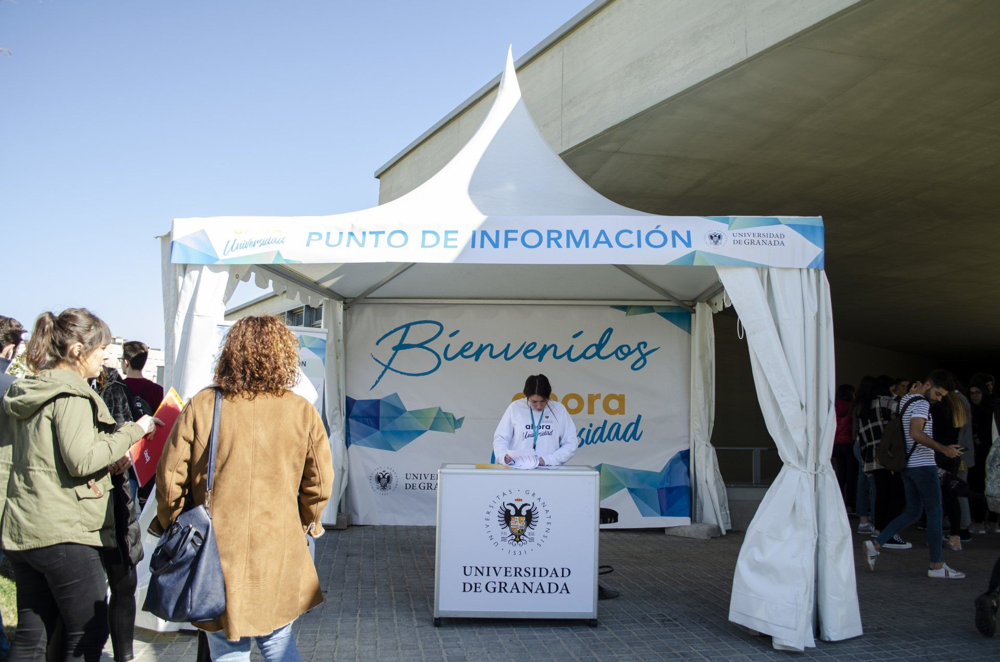

Nuestra propuesta de valor
Este evento de la Universidad de Granada consiguió reunir a más de 7.000 futuros estudiantes en las instalaciones del Parque Tecnológico
de la Salud. Se ofrecieron charlas formativas, mesas redondas y se habilitó una zona con más de 30 stands modulares de entre 6 y 12 m2 con
paredes rotuladas, frontis de impresión digital, iluminación LED, puntos de luz y mobiliario.
En la recepción habilitamos una jaima 4x4 con lona trasera y mostrador rotulado como punto de información. Además, diseñamos y montamos photocall
con moqueta y los programas en cartón pluma con la programación de los tres días.
Para garantizar la coordinación del IV Salón Estudiantil, contamos con auxiliares dentro de sala y en cada una de las torres donde se impartían las charlas.



Desarrollo de Programas de Innovación Abierta
Este encuentro es una gran oportunidad para que las empresas regionales del sector biotecnológico lleven a cabo foros y programas de innovación abierta.
Biotech Open Innovation 2018 nace con el objetivo de dar visibilidad a la actividad de las Pymes andaluzas de este sector.